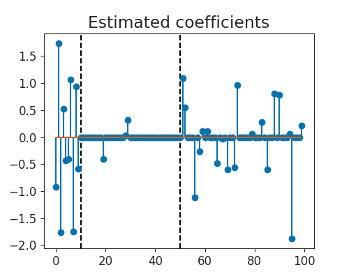

Note
Click here to download the full example code
Weighted Lasso with some zero weights¶
This example demonstrates how to use a weighted lasso with some vanishing weights. The fast Celer solver is adapted to use primal Anderson acceleration, allowing it to not compute the dual and handle 0 weights.
Out:
/home/circleci/.local/lib/python3.8/site-packages/seaborn/cm.py:1582: UserWarning: Trying to register the cmap 'rocket' which already exists.
mpl_cm.register_cmap(_name, _cmap)
/home/circleci/.local/lib/python3.8/site-packages/seaborn/cm.py:1583: UserWarning: Trying to register the cmap 'rocket_r' which already exists.
mpl_cm.register_cmap(_name + "_r", _cmap_r)
/home/circleci/.local/lib/python3.8/site-packages/seaborn/cm.py:1582: UserWarning: Trying to register the cmap 'mako' which already exists.
mpl_cm.register_cmap(_name, _cmap)
/home/circleci/.local/lib/python3.8/site-packages/seaborn/cm.py:1583: UserWarning: Trying to register the cmap 'mako_r' which already exists.
mpl_cm.register_cmap(_name + "_r", _cmap_r)
/home/circleci/.local/lib/python3.8/site-packages/seaborn/cm.py:1582: UserWarning: Trying to register the cmap 'icefire' which already exists.
mpl_cm.register_cmap(_name, _cmap)
/home/circleci/.local/lib/python3.8/site-packages/seaborn/cm.py:1583: UserWarning: Trying to register the cmap 'icefire_r' which already exists.
mpl_cm.register_cmap(_name + "_r", _cmap_r)
/home/circleci/.local/lib/python3.8/site-packages/seaborn/cm.py:1582: UserWarning: Trying to register the cmap 'vlag' which already exists.
mpl_cm.register_cmap(_name, _cmap)
/home/circleci/.local/lib/python3.8/site-packages/seaborn/cm.py:1583: UserWarning: Trying to register the cmap 'vlag_r' which already exists.
mpl_cm.register_cmap(_name + "_r", _cmap_r)
/home/circleci/.local/lib/python3.8/site-packages/seaborn/cm.py:1582: UserWarning: Trying to register the cmap 'flare' which already exists.
mpl_cm.register_cmap(_name, _cmap)
/home/circleci/.local/lib/python3.8/site-packages/seaborn/cm.py:1583: UserWarning: Trying to register the cmap 'flare_r' which already exists.
mpl_cm.register_cmap(_name + "_r", _cmap_r)
/home/circleci/.local/lib/python3.8/site-packages/seaborn/cm.py:1582: UserWarning: Trying to register the cmap 'crest' which already exists.
mpl_cm.register_cmap(_name, _cmap)
/home/circleci/.local/lib/python3.8/site-packages/seaborn/cm.py:1583: UserWarning: Trying to register the cmap 'crest_r' which already exists.
mpl_cm.register_cmap(_name + "_r", _cmap_r)
usetex mode requires TeX.
#########################
##### Computing alpha 1/1
#########################
KKT max violation: 1.75e+00
Iteration 1, 20 feats in subpb.
KKT max violation: 5.58e-01
Iteration 2, 20 feats in subpb.
KKT max violation: 2.26e-01
Iteration 3, 26 feats in subpb.
KKT max violation: 4.37e-03
Iteration 4, 32 feats in subpb.
KKT max violation: 6.99e-05
Iteration 5, 34 feats in subpb.
KKT max violation: 4.25e-07
Iteration 6, 34 feats in subpb.
KKT max violation: 5.66e-10
Iteration 7, 34 feats in subpb.
KKT max violation: 6.41e-13
import numpy as np
from numpy.linalg import norm
import matplotlib.pyplot as plt
from sklearn.preprocessing import LabelBinarizer
from sklearn.datasets import fetch_openml
from andersoncd import WeightedLasso
from andersoncd.plot_utils import configure_plt
from andersoncd.data import make_correlated_data
configure_plt(fontsize=14, poster=False)
dataset = "simu"
if dataset == "simu":
n_features = 100
X, y, _ = make_correlated_data(
n_samples=100, n_features=n_features, corr=0.7)
else:
X, y = fetch_openml("leukemia", return_X_y=True)
X, y = X.to_numpy(), y.to_numpy()
n_features = 100
X /= norm(X, axis=0)
X = X[:, :n_features]
y = LabelBinarizer().fit_transform(y)[:, 0].astype(float)
weights = np.empty(n_features)
# unpenalize the first 10 features:
weights[:10] = 0
# put large penalty on the 10-50 features
weights[10:50] = 5
# put small penalty on last 50 features
weights[50:] = 1
alpha_max = np.max(np.abs(
X[:, weights != 0].T @ y / weights[weights != 0])) / len(y)
clf = WeightedLasso(alpha=alpha_max/10, weights=weights,
fit_intercept=False, verbose=1, tol=1e-10).fit(X, y)
plt.figure(figsize=(5, 4))
plt.axvline(50, color='k', linestyle='--')
plt.axvline(10, color='k', linestyle='--')
plt.stem(clf.coef_)
plt.title("Estimated coefficients")
plt.show(block=False)
Total running time of the script: ( 0 minutes 0.180 seconds)